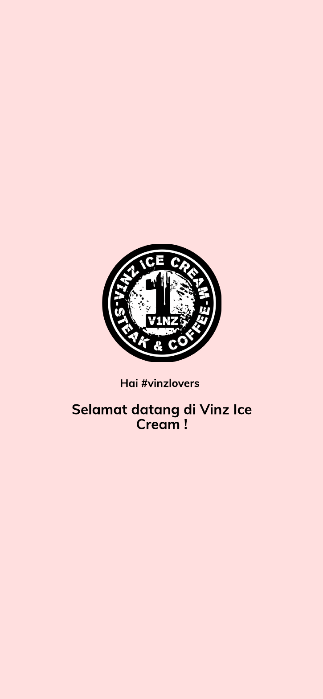
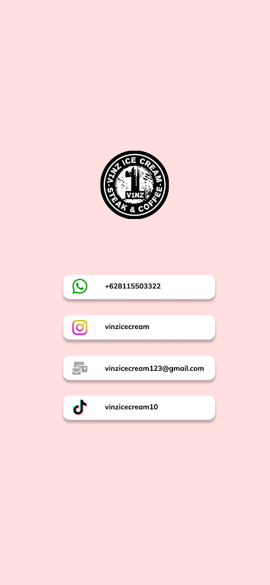

UI/UX Vinz Ice Cream: Sambutan, Beranda, dan Kontak
Proyek desain UI/UX (bagian 1 dari 2), ditambahkan ke portfolio pada
Rancangan antarmuka aplikasi pemesanan makanan dan minuman untuk Vinz Ice Cream. Bagian ini memuat layar sambutan, beranda, dan kontak. Layar pesanan dan pembayaran ada di bagian 2.
Layar Sambutan

Layar pembuka menampilkan logo Vinz Ice Cream - Steak & Coffee di tengah halaman, dengan sapaan "Hai #vinzlovers" dan ucapan selamat datang.
Layar Beranda

- Kolom pencarian dengan tombol filter.
- Empat kategori: Sarapan, Cemilan, Minuman, dan Kue.
- Tiga bagian rekomendasi: "Terdekat dengan kamu", "Teman-temanmu sedang makan di sini!", dan "Snack ringan untuk kamu".
- Kartu menu yang menampilkan foto, jarak, rating, nama, dan harga.
- Navigasi bawah: Beranda, Keranjang, Scan QR, Telusuri, dan Profile.
Layar Kontak

Layar kontak menampilkan logo dan empat kartu kontak: WhatsApp, Instagram, email, dan TikTok.
Gaya Visual
- Latar
- Merah muda lembut (#ffdfdf)
- Aksen
- Merah muda terang (#ff8cf4) pada tombol dan ikon yang aktif
- Kartu
- Putih dengan sudut membulat dan bayangan halus
Informasi Proyek
- Jenis
- Desain UI/UX aplikasi seluler
- Alat
- Figma